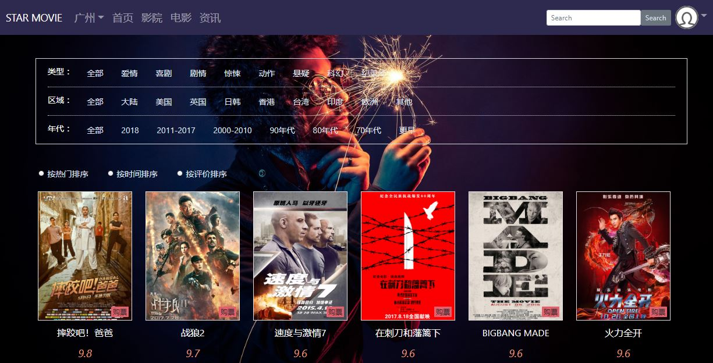
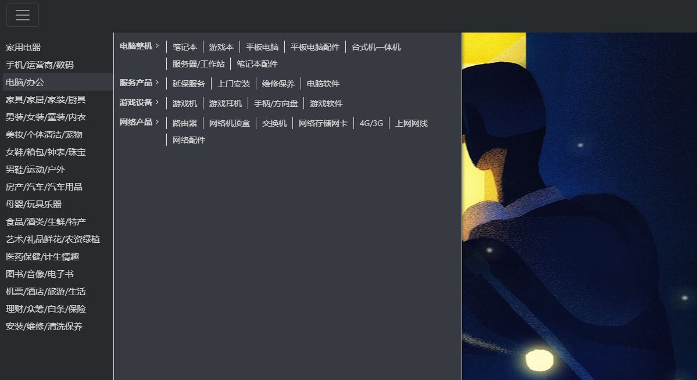
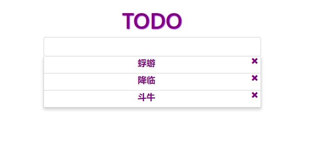
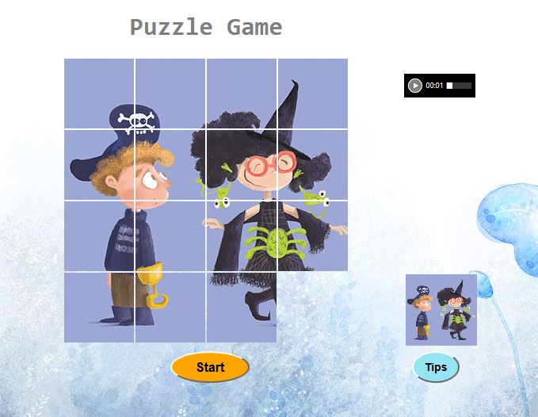
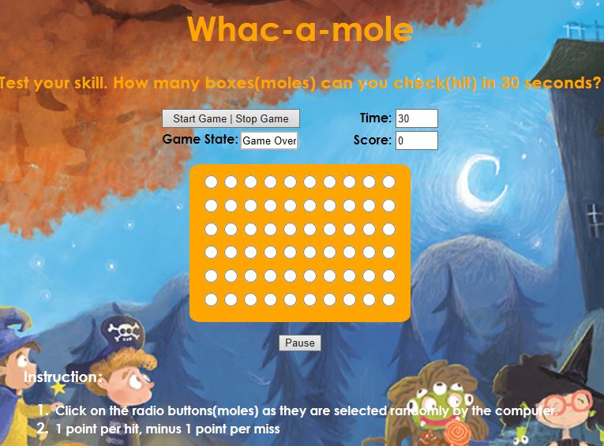

-
STAR MOVIE
- 一个简单的在线电影购票系统，涵盖功能包括电影购票、查看热点资讯、查看热门影片、查看影院等基本功能。
- JS Try it
-
SideBar
- SideBar是一个二级菜单导航栏，仿照京东和阿里云侧导航栏实现。具有防抖动功能。
- JS Try it
-
TodoList
- TodoList是一个简单的用Jquery和Bootstrap框架实现的列表添加和删除应用。它使用本地会话存储，只用关闭浏览器或者页面时数据才会清空。刷新不会丢失数据。
- Try it
-
Puzzle
- Puzzle是一个简单的用原生JS实现的拼图游戏。当开始后，拼图成功则提示成功。可以给一定提示。
- JS Try it
-
Mole
- Mole是一个简单的用原生JS实现的打地鼠游戏。击中得一分，否则减一分。计算在规定时间啊内获得的分数。
- JS Try it